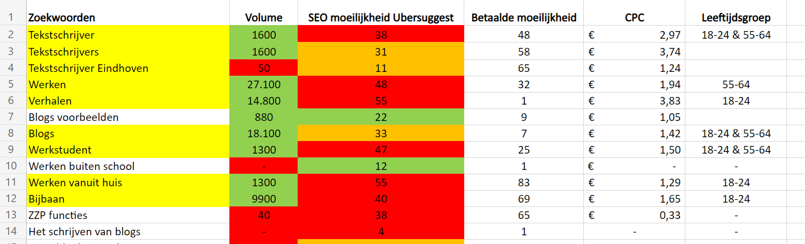

Aanpak schrijven van teksten
Voor de Happy Talents landingspagina heb ik SEO teksten geschreven. Het
doel van de landingspagina is om meer zzp'ers en werkstudenten te werven die voor bij Happy Talents kunnen
gaan werken. De pagina die ik heb uitgewerkt voor de landingspagina is de detailpagina voor de
werkstudenten.
Zoekwoorden
Een eerste stap in het schrijven van de content was het uitvoeren van een
zoekwoordanalyse. Welke woorden zijn belangrijk om in de teksten te benoemen en welke woorden werken niet.
Mijn groepsgenoten hebben deze analyse uitgewerkt.
Uit het onderzoek bleek dat een aantal woorden als blogs, tekstschrijver, werkstudent best wat verkeer hebben. Het lastige aan deze woorden zijn dat het moeilijk is om hierbij hoog in de zoekmachine resultaten te komen.
Uit het onderzoek bleek dat een aantal woorden als blogs, tekstschrijver, werkstudent best wat verkeer hebben. Het lastige aan deze woorden zijn dat het moeilijk is om hierbij hoog in de zoekmachine resultaten te komen.

Geschreven teksten
Ondanks dat de SEO moeilijkheid van de woorden dus best hoog waren heb ik
deze in de verschillende elementen van de website toegepast. De woorden uit de keyword analyse zijn namelijk
van belang voor zowel de zoekmachines als de gebruiker.
Header
Header waar zoekwoorden als werkstudent en
copywriter in terug komen en waar ook de gebruiker een eerste indruk krijgt wat het is om als werkstudent
bij Happy te werken.
Informatieve content
In de informatieve content veel aandacht
voor de omschrijvingen van de werkzaamheden welke ook goed scoren voor de zoekmachines. "Altijd al
geintresseerd geweest in het schrijven van teksten, blogs of verhalen?"
Testimonials
In de testimonials van collega's heb ik de zowel de USP's van Happy
Talents
verwerkt en de zoekwoorden. Per collega is de tekst gericht
op één USP. Op deze manier is de tekst zowel voor de doelgroep als voor de zoekmachines interresant.

Call to action
In het call to action element nog een laatste keer aandacht voor de
belangrijkste zoekwoorden.
Reflectie
In de teksten die ik heb geschreven voor de webshop opdrachten waren de
zoekvolumes van de woorden erg laag. De weinige woorden die wel hoog scoorden waren lastig in de tekst te
verwerken. Voor het schrijven van de teksten van de Happy Talents pagina was het een stuk makkelijk
aangezien de woorden die in de teksten moesten worden verwerkt veel beter waren toe te passen naar de
doelgroep van de website toe. Woorden als: werkstudent, blog schrijven en tekstschrijver zijn ook echt
woorden die van belang zijn om te vermelden aan zowel de gebruiker als voor de zoekmachines. Hierdoor ging
het schrijven van de teksten veel makkelijker en meer vanzelf.